RabbitMQ
RabbitMQ 是基于 AMQP（高级消息队列协议）的开源消息中间件，主要用于分布式系统中的应用解耦、异步处理、流量削峰以及复杂消息路由。
核心架构与基本概念：
RabbitMQ 的核心设计建立在生产者、交换机、队列和消费者之间的解耦关系上：
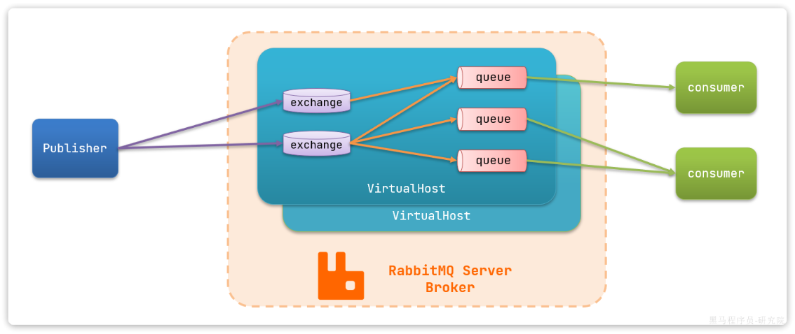
- Producer（生产者）：发布消息的应用端。
- Exchange（交换机）：接收生产者发送的消息，并根据路由规则将消息投递到绑定的队列中。
- Queue（消息队列）：消息的存储容器，遵循 FIFO（先进先出）原则，保存消息直到被消费者接收。
- Binding（绑定规则）：建立 Exchange 与 Queue 之间的关联，通常带有 Binding Key。
- Routing Key（路由键）：生产者发送消息时附带的路由标识。
- Consumer（消费者）：订阅队列并处理消息的应用端。
- virtual host（虚拟主机）：起到数据隔离的作用。每个虚拟主机相互独立，有各自的exchange、queue
1. 部署
基于Docker来安装RabbitMQ
docker run -d \
--name rabbitmq \
--hostname mq \
--restart=always \
-p 15672:15672 \
-p 5672:5672 \
-e RABBITMQ_DEFAULT_USER=admin \
-e RABBITMQ_DEFAULT_PASS=admin \
-v mq-data-312:/var/lib/rabbitmq \
-v mq-plugins-312:/plugins \
rabbitmq:3.12-management
- 15672：RabbitMQ提供的管理控制台的端口
- 5672：RabbitMQ的消息发送处理接口
访问 http://192.168.146.130:15672即可看到管理控制台。首次访问需要登录，默认的用户名和密码在配置文件中已经指定了。
2. 收发消息
| 组件 | 推荐格式 | 示例 | 解释 |
|---|---|---|---|
| 交换机 (Exchange) | 项目名.业务模块.类型.exchange |
mall.order.direct.exchange |
明确指出属于哪个项目、哪个模块以及交换机类型。 |
| 队列 (Queue) | 项目名.业务模块.具体操作.queue |
mall.order.cancel.queue |
明确指出这个队列里的消息是用来做什么的。 |
| 路由键 (Routing Key) | 业务模块.动作.状态 |
order.payment.success |
使用 . 分隔，名词+动词/状态，方便与 Topic 交换机的通配符（* 或 #）结合使用。 |
1. 交换机
我们打开Exchanges选项卡，可以看到已经存在很多交换机：
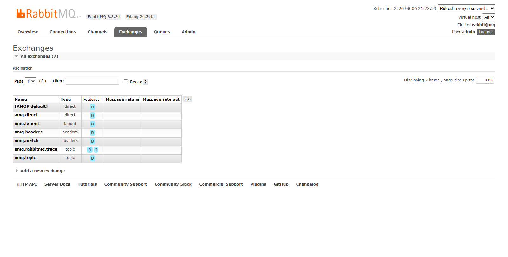
我们点击任意交换机，即可进入交换机详情页面。利用控制台中的publish message 发送一条消息：
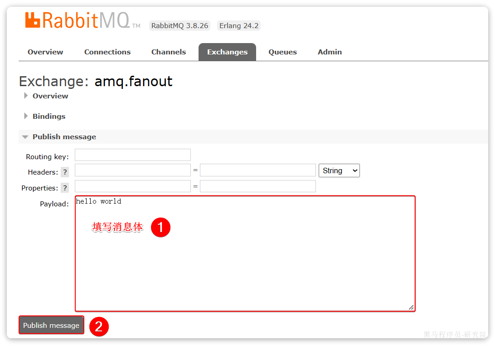
这里是由控制台模拟了生产者发送的消息。由于没有消费者存在，最终消息丢失了，这样说明交换机没有存储消息的能力。
2. 队列
我们打开Queues选项卡，新建一个队列：
命名为hello.queue1：
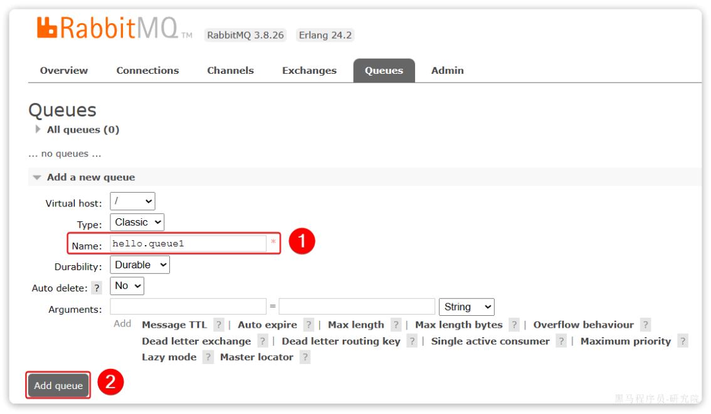
再以相同的方式，创建一个队列，名字为
hello.queue2，最终队列列表如下：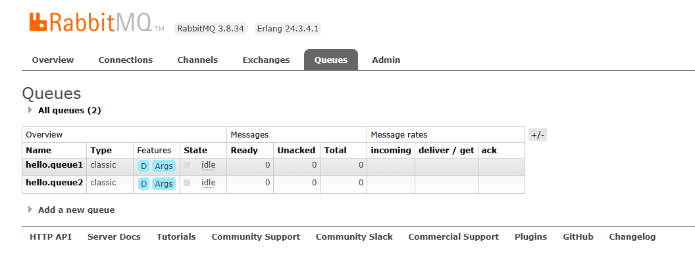
此时，我们再次向
amq.fanout交换机发送一条消息。会发现消息依然没有到达队列！！怎么回事呢？
发送到交换机的消息，只会路由到与其绑定的队列，因此仅仅创建队列是不够的，我们还需要将其与交换机绑定。
3. 绑定关系
点击Exchanges选项卡，点击amq.fanout交换机，进入交换机详情页，然后点击Bindings菜单，在表单中填写要绑定的队列名称：
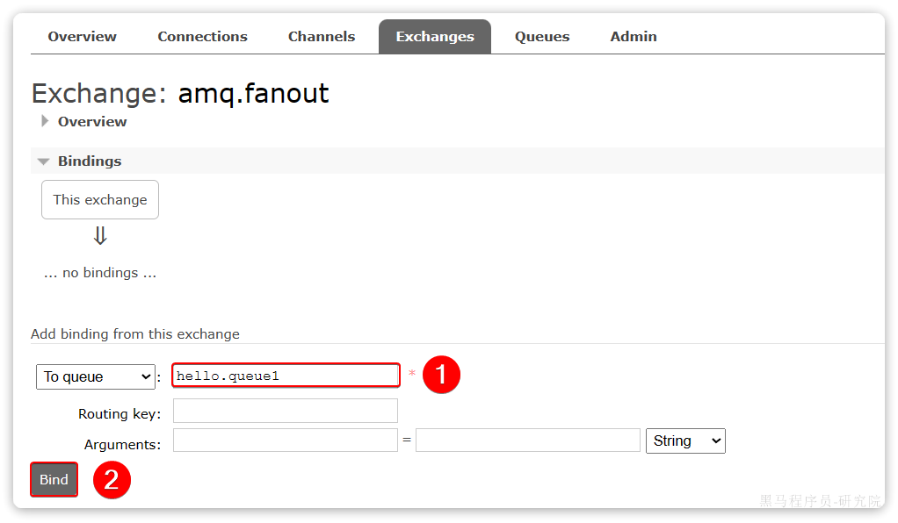
相同的方式，将hello.queue2也绑定到改交换机。
最终，绑定结果如下：
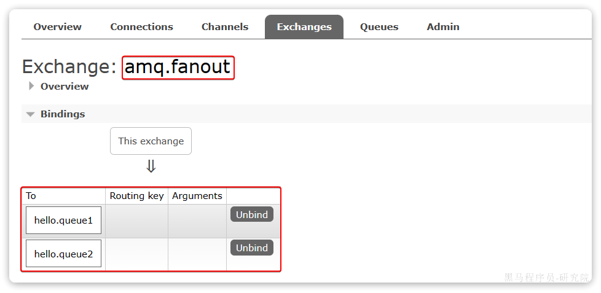
4. 发送消息
再次回到exchange页面，找到刚刚绑定的amq.fanout，点击进入详情页，再次发送一条消息：

回到Queues页面，可以发现hello.queue中已经有一条消息了：
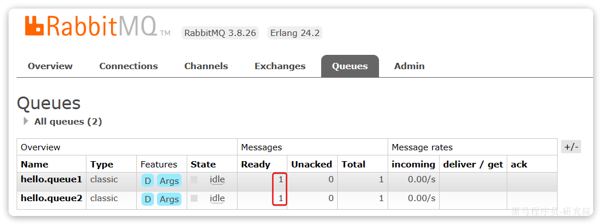
点击队列名称，进入详情页，查看队列详情，这次我们点击get message：
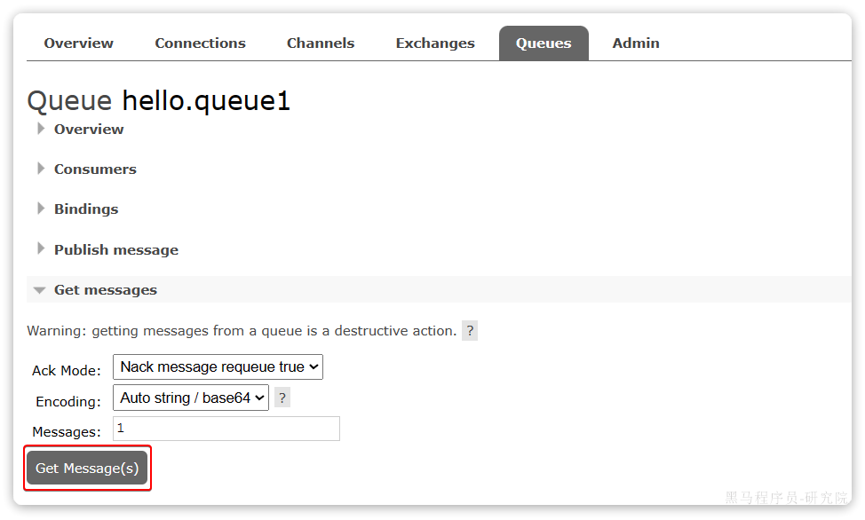
可以看到消息到达队列了：
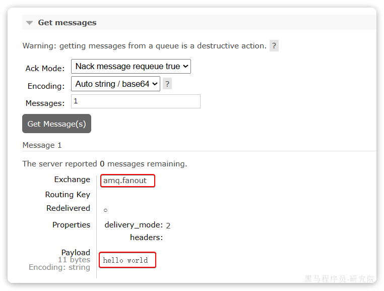
这个时候如果有消费者监听了MQ的
hello.queue1或hello.queue2队列，自然就能接收到消息了。
3. 数据隔离
1. 用户管理
点击Admin选项卡，首先会看到RabbitMQ控制台的用户管理界面：
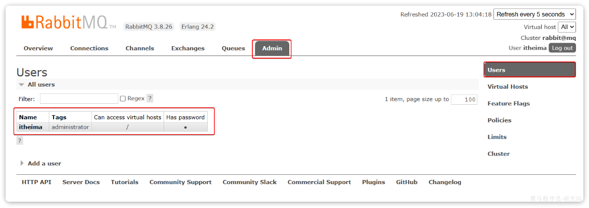
这里的用户都是RabbitMQ的管理或运维人员。目前只有安装RabbitMQ时添加的
itheima这个用户。仔细观察用户表格中的字段，如下：
Name：itheima，也就是用户名Tags：administrator，说明itheima用户是超级管理员，拥有所有权限Can access virtual host：/，可以访问的virtual host，这里的/是默认的virtual host
对于小型企业而言，出于成本考虑，我们通常只会搭建一套MQ集群，公司内的多个不同项目同时使用。这个时候为了避免互相干扰， 我们会利用virtual host的隔离特性，将不同项目隔离。一般会做两件事情：
- 给每个项目创建独立的运维账号，将管理权限分离。
- 给每个项目创建不同的
virtual host，将每个项目的数据隔离。
比如，我们给黑马商城创建一个新的用户，命名为hmall：
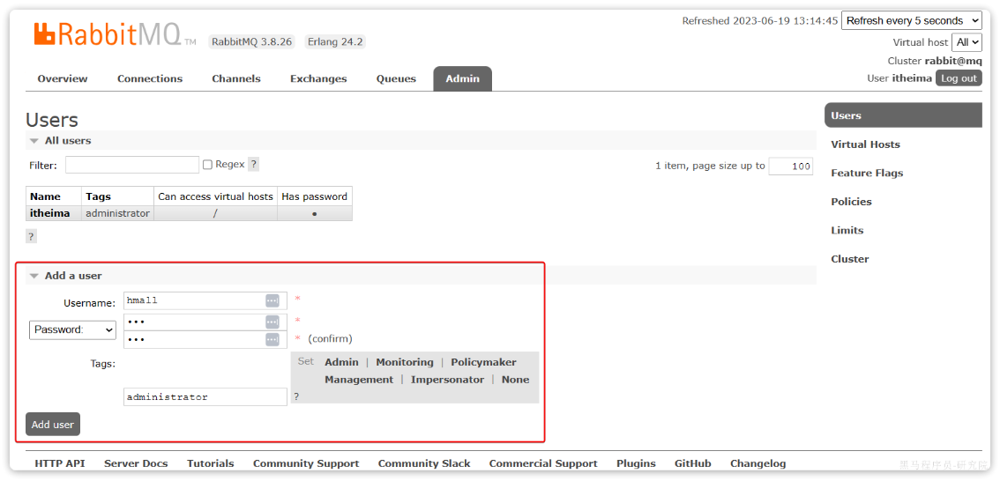
你会发现此时hmall用户没有任何
virtual host的访问权限：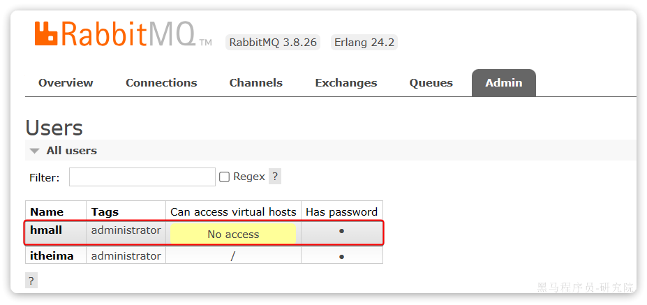
别急，接下来我们就来授权。
2. virtual host
我们先退出登录：切换到刚刚创建的hmall用户登录，然后点击Virtual Hosts菜单，进入virtual host管理页：
可以看到目前只有一个默认的virtual host，名字为 /。
我们可以给黑马商城项目创建一个单独的virtual host，而不是使用默认的/。
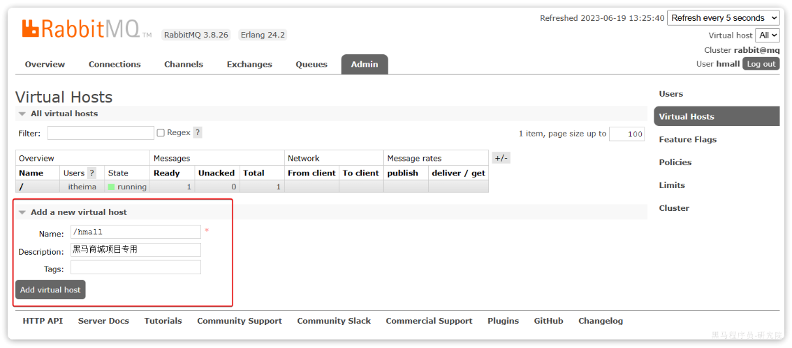
创建完成后如图：
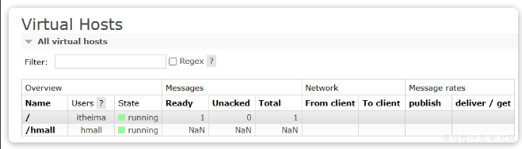
由于我们是登录
hmall账户后创建的virtual host，因此回到users菜单，你会发现当前用户已经具备了对/hmall这个virtual host的访问权限了：
此时，点击页面右上角virtual host下拉菜单，切换virtual host为 /hmall：
然后再次查看queues选项卡，会发现之前的队列已经看不到了，这就是基于virtual host的隔离效果。